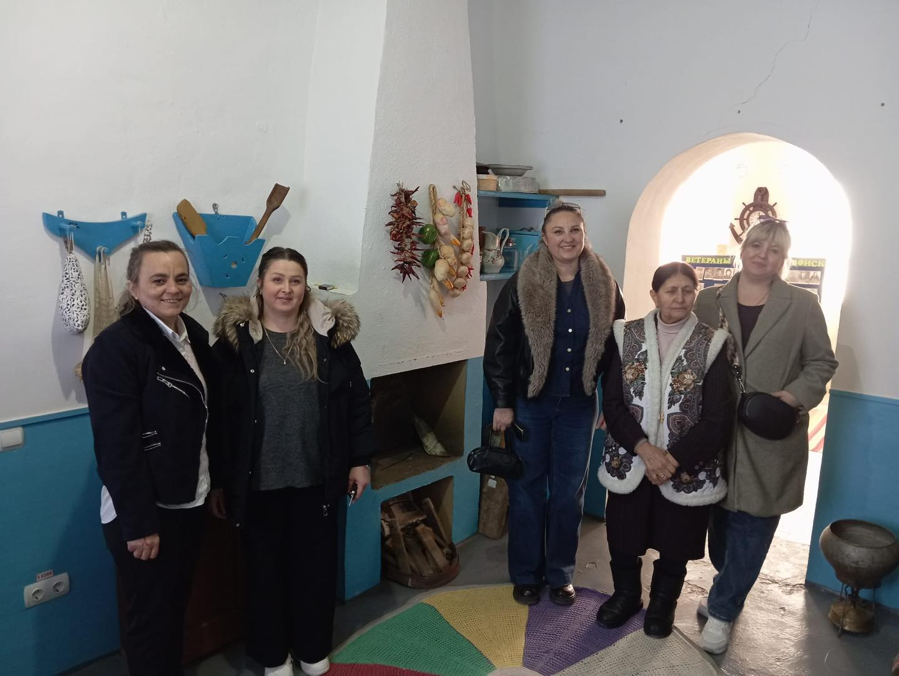
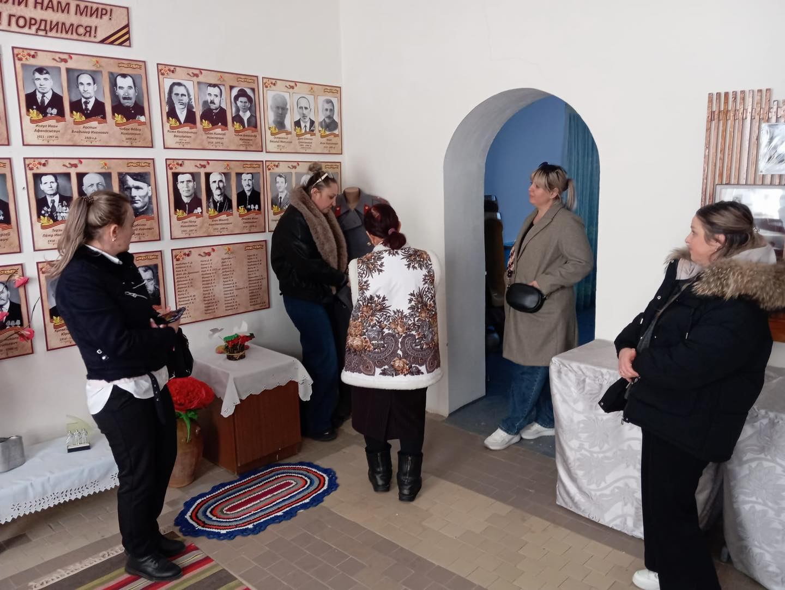
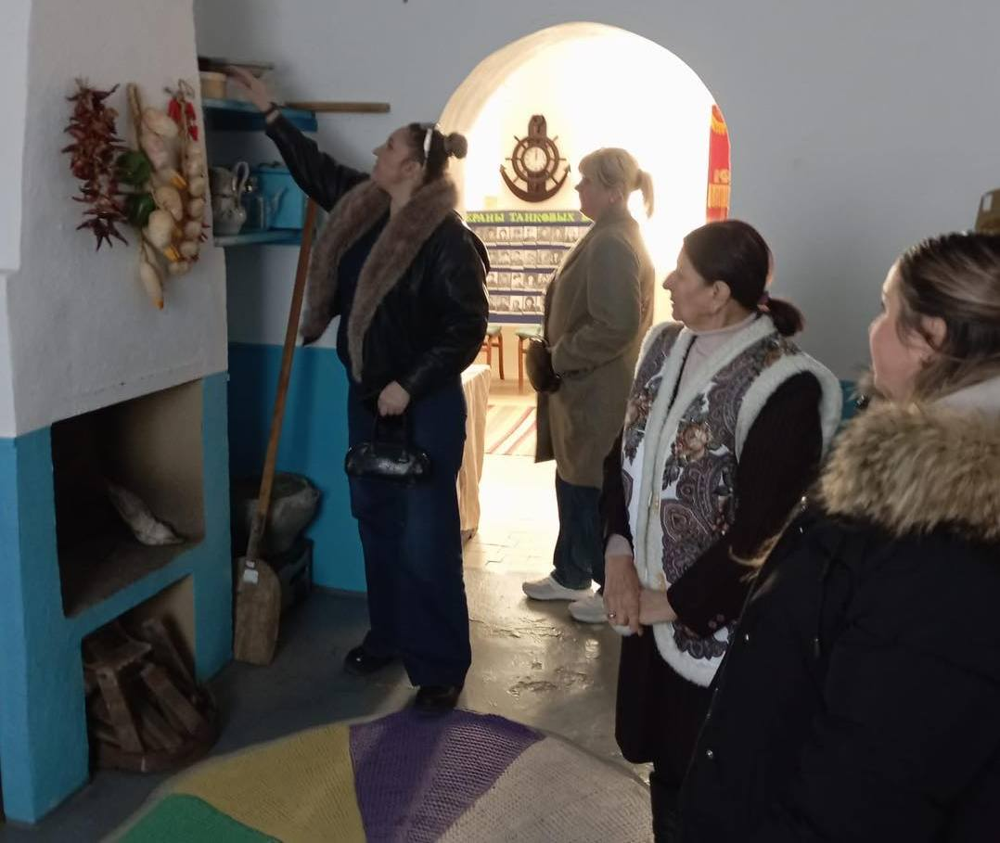
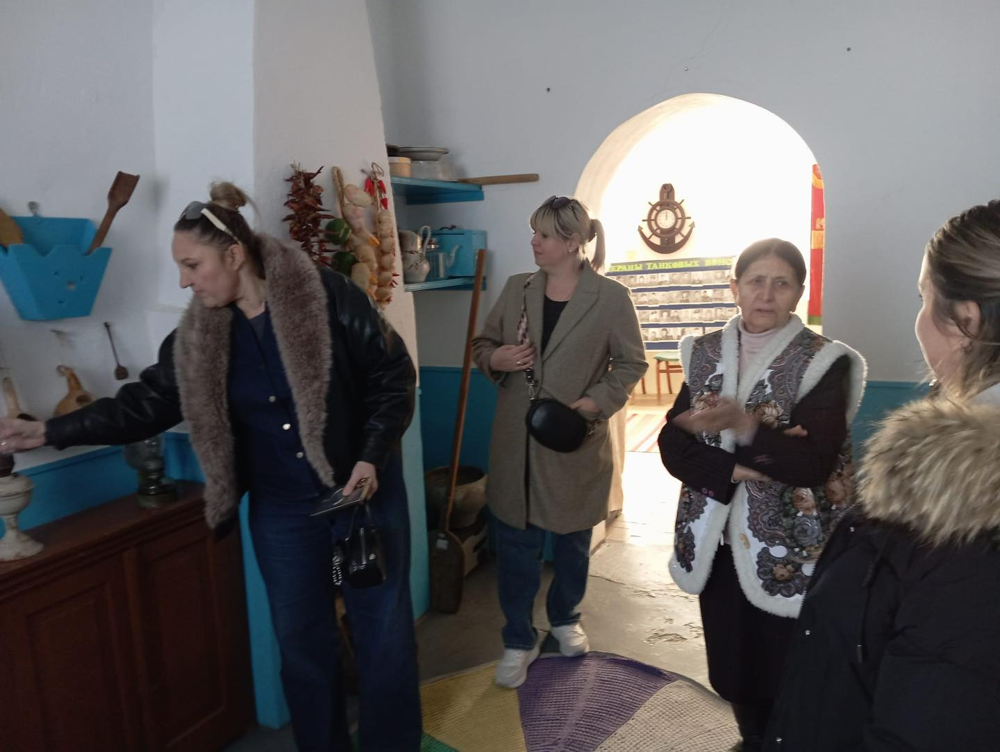
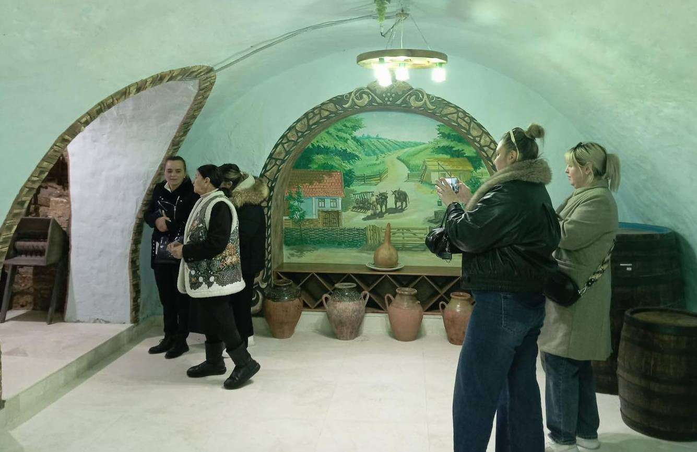

Визит коллег из Тараклии
Начало марта 2025 года
Наш музей стал площадкой для важного профессионального диалога: в рамках обмена опытом нас посетили коллеги из города Тараклия.
Межмузейное сотрудничество — это возможность по-новому взглянуть на свои фонды и экспозиции, обсудить актуальные вопросы сохранения культурного наследия и работу с этнографическими коллекциями.
Особое внимание было уделено современным подходам к привлечению посетителей и популяризации традиционной культуры.
Тараклия — уникальный центр болгарской культуры, и опыт коллег в сохранении самобытных традиций стал для нас источником вдохновения.
Уверены, что такие встречи станут основой для будущих совместных проектов и выставок.
Благодарим гостей за открытость и профессионализм!
Фото и видео





